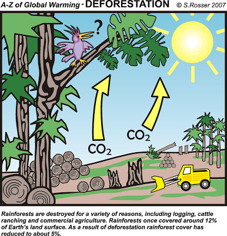
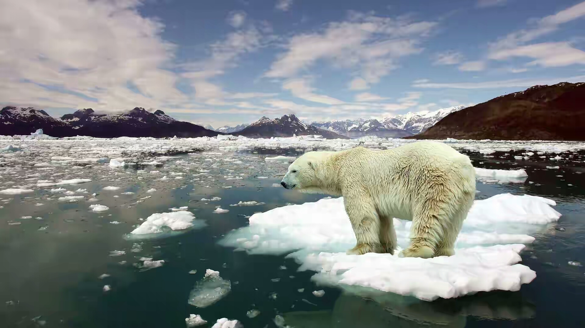
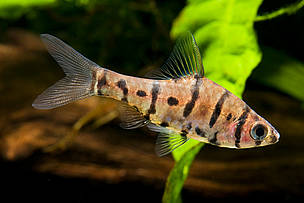

Rainforests As the Global Climate Regulators
Rainforests-the biggest storages of Earth's biodiversity-are extremely important global climate regulators.
Rainforests act as pollution filters by absorbing carbon dioxide from the atmosphere. Carbon dioxide(CO2) is a powerful air pollutant which contributes to global warming and therefore to the de-stabilisation of climate patterns throughout the world.
By removing carbon dioxide from the atmosphere, rainforests help keep the global climate stable and functioning properly.
So what happens when this biodiversity is lost?
Rainforests act as pollution filters by absorbing carbon dioxide from the atmosphere. Carbon dioxide(CO2) is a powerful air pollutant which contributes to global warming and therefore to the de-stabilisation of climate patterns throughout the world.
By removing carbon dioxide from the atmosphere, rainforests help keep the global climate stable and functioning properly.
So what happens when this biodiversity is lost?
Effect of biodiversity loss:
Rainforests become weaker, disintegrate and lose their capacity to absorb carbon dioxide leading to more global warming and other climate change problems.
Rainforests become weaker, disintegrate and lose their capacity to absorb carbon dioxide leading to more global warming and other climate change problems.

Biodiversity As An Abundant Source Of Foods
It is the rainforest biodiversity that provides us with a vast array of foods which become our true favorites over the last several decades.We can't
imagine our lives without products such as cacao, coffee, tea, bananas, sugar, pineapples, avocados, and the list goes on and on.
Nowadays,consumers in many countries are also offered even more exotic foods originating from rainforests including such popular ones as maca, guarana, lucuma, acai berriess and a lot more.
So what happens if this food biodiversity is lost?
Nowadays,consumers in many countries are also offered even more exotic foods originating from rainforests including such popular ones as maca, guarana, lucuma, acai berriess and a lot more.
So what happens if this food biodiversity is lost?
Effect of biodiversity loss:
The variety of foods that we consume will be significantly reduced which may ultimately lead to poorer health as well
The variety of foods that we consume will be significantly reduced which may ultimately lead to poorer health as well

Biodiversity As An Incredible Source of Health-Supporting
"Let the food be your medicine, and mecdicine be your food" and the fact that the rainforest foods we mentioned above are full of super nutrients essential
for human & animal health.
Rainforest biodiversity provides us with a huge variety of medicinal plants & herbs which are always there for us to ues when our bodies get into a state of disease for one reason or another and require further help from the nature
Biodiversity is almost a limitless source of such natural remedies and cures.
Rainforest biodiversity provides us with a huge variety of medicinal plants & herbs which are always there for us to ues when our bodies get into a state of disease for one reason or another and require further help from the nature
Biodiversity is almost a limitless source of such natural remedies and cures.
Effect of biodiversity loss:
The variety of natural remedies we rely upon will be greatly reduced inevitably leading to poorer health and "ill-being".
The variety of natural remedies we rely upon will be greatly reduced inevitably leading to poorer health and "ill-being".
.jpg)
Biodiversity Carries An Enormous Ethical Value
We don’t have the right to destroy something which is beautiful and has the right for peaceful existence just beacuse it is.We must stop thinking that we own the
the nature and can use it and abuse it for someone’s economic or financial benefits.
In other words, we have an ethical responsibility to preserve the natural beauty of our planet.
In other words, we have an ethical responsibility to preserve the natural beauty of our planet.
Effect of biodiversity loss:
Natural beauty will vanish and future generations may never be in a position to appreciate the nature’s wonders.
